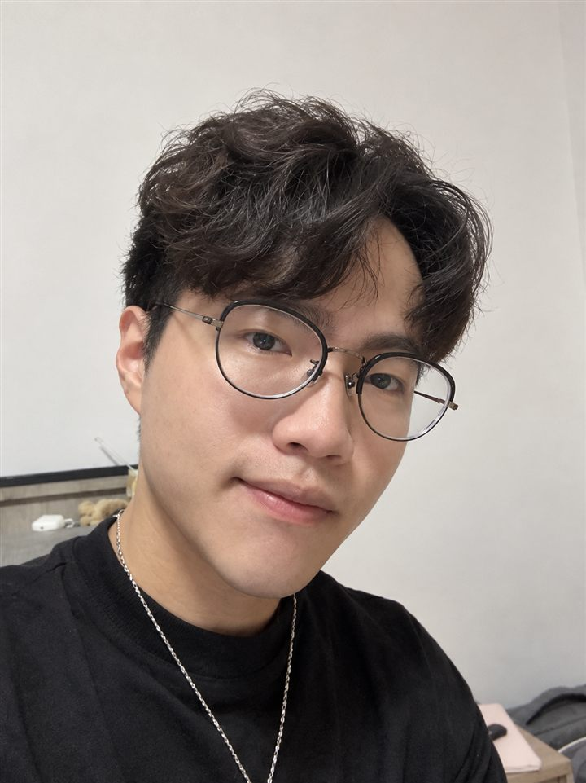

碳盤查平台
將分散的 Excel 盤查作業整理為具備資料結構、帳號權限與報表匯出的資訊系統。
問題資料版本與係數分散，人工整理及計算容易出錯。
本人負責需求分析、資料庫、前後端、權限、報表與部署。
已知實作以 IIS 與 Azure 完成部署流程驗證。
.NET 後端／全端工程師
具備約 3 年 MES 商業系統開發經驗，使用 ASP.NET Core、C# 與 MSSQL，參與從需求分析、資料庫與功能設計，到開發與部署的完整流程。

Selected work
從公開作品與商業系統案例，看我如何把流程需求轉成可部署、可維護的功能。
將分散的 Excel 盤查作業整理為具備資料結構、帳號權限與報表匯出的資訊系統。
將不同工廠的產品、訂單、生產與委外流程，整理為可維護的商業系統功能。
受商業保密限制，無法公開原始碼與客戶畫面；面試時可說明不涉及機密的設計與技術取捨。
Experience & stack
在製造業客戶的實際流程中，負責需求釐清、系統實作、資料處理與導入調整。
邁森科技・製造執行系統（MES）開發
Education & background
碩士論文：了解 AI 正念對學習者 GenAI 操作意圖的影響——以自我調節與任務科技適配理論為觀點
Contact
歡迎透過 Email 或電話聯絡，進一步了解我的專案與商業系統開發經驗。